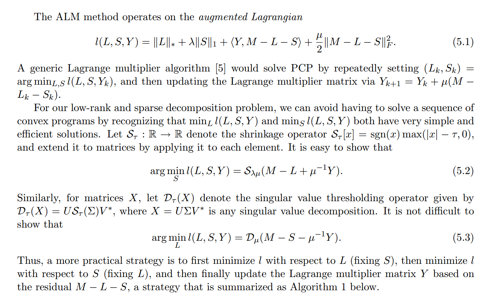
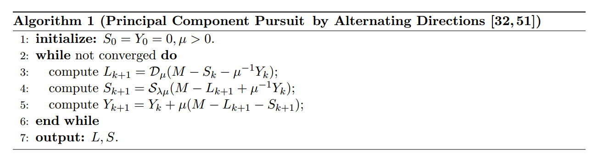

3.5k words in total, 13 minutes required. 本文大部分内容来自于阅读他人博客的笔记，已经在扩展阅读材料中列出。 回顾PCAPCA即Principal components analysis，中文译作主成分分析或主元分析。通俗来讲，它是一种数据在度量空间上的降维方法：也就是说，我们在将数据进行表征空间的变换之后，能够最大化地用几个正交基来表示原有的数据（当然，这一过程可能是有损的）。当我们能用更少的维度来表达原有更多维度的数据时，降维的目的也即达成了。注意，主成分分析的结果是得到新的特征，而不是简单地舍弃原来的特征列表中的一些特征。 本质上，允许我们这么做的原因，是数据间往往存在关联性，他们实际的表达可以在去除这些相关性后变得更为简单和有效。至于为什么选择方差（或者是协方差），则是为了让我们找到方差最大的特征维度，使得其能够最好地区分开数据的差异，实现主成分提取的目标。 为什么要使用到奇异值分解，是我们希望提取的成分都是正交即不相关的，这样能最大化表达的非冗余性。 我们先从协方差矩阵入手，给定两个维度$x$,$y$，他们的协方差矩阵表示如下 其中， $\sigma_x^2$和$\sigma_y^2$分别是维度$x$和$y$的变异，$\sigma(x,y)$是二者间的协方差，代表他们的共变程度或相关性。 上述二维的协方差矩阵可以推广到$n$维，即给定一个$n \times m$的矩阵$\mathbf{X}$，可以很容易得到它的协方差矩阵为$\frac{1}{m}\mathbf{X}\mathbf{X}^\mathsf{T}$，这个对称矩阵中，$n$是维度，$m$是$\mathbf{X}$中样本点的个数。 数据的全部信息包含在协方差矩阵所描述的全部变异中。$\sigma_x^2$和$\sigma_y^2$描述了在两个维度上数据的分散程度；而协方差$\sigma(x,y)$表示两个维度的相关程度，其越大，也就意味着噪声越大，信息的冗余程度越高。主成分分析的目的就是要最小化噪声，最大化提取出数据中包含的信息。它可以帮助我们找到新的维度，从而剔除不同维度之间的冗余信息，即让不同维度之间的相关为0。 理想地，最后得到两个维度$p1$和$p2$上，数据的协方差矩阵如下： 总结来讲，两个小目标： 找到变异最大的新维度，以最大程度地区分不同数据点 这一新维度应该可以让我们预测和重建原始维度，重建或投影误差应该最小化 引入特征向量特征向量的使用可以帮助我们快速找到主成分的维度。从数学上讲，主成分分析实际上就是让原始数据的协方差矩阵对角化，即让原始矩阵转换成只有对角线上有数值，非对角线上为0的矩阵。而特征向量则是让矩阵对角化的工具：一个$n \times n$的矩阵有$n$个特征向量（如果特征向量存在）每个特征向量有相应的特征值，一个特征向量就是一个方向，它是该方向上的单位向量。总之，特征向量定义了新的坐标系，它将原始数据转换到相互独立的两个方向上，且在主成分上方差达到最大化。[1] 可知特征向量满足：协方差矩阵 $\times$ 特征向量 = 特征值 $\times$ 特征向量 也即，我们可以在新的协方差矩阵的对角线上填充两个特征向量对应的特征值。 协方差矩阵和特征向量的关系从原始的协方差矩阵到PCA输出的协方差矩阵，这个过程从数学的角度理解，就是一个子空间线性转换（缩放、旋转）的问题。 再来看这个等式：协方差矩阵 $\times$ 特征向量 = 特征值 $\times$ 特征向量 这意味着，一个特征向量，它在经过协方差矩阵的线性变换后，不会改变方向，而只是在原方向上进行了缩放。缩放比例就是这个特征向量对应的特征值。 形象地说： 特征向量重建了坐标系，相当于是一个旋转矩阵 缩放矩阵的平方等于对角线为特征值的对角矩阵 我们通过数学来推导下，设原始数据矩阵$\mathbf{X}$对应的协方差矩阵为$\mathbf{C}$，其有$m$个样本，而$\mathbf{P}$是一组基按行组成的矩阵，设$\mathbf{Y}=\mathbf{P}\mathbf{X}$，则$\mathbf{Y}$为$\mathbf{X}$对$\mathbf{P}$做基变换后的数据。设$\mathbf{Y}$的协方差矩阵为$\mathbf{C}$，则有 我们要找的$\mathbf{P}$不是别的，而是能让原始协方差矩阵对角化变成$\mathbf{D}$的$\mathbf{P}$。换句话说，优化目标变成了寻找一个矩阵$\mathbf{P}$，满足是一个对角矩阵，并且对角元素按从大到小依次排列，那么$\mathbf{P}$的前$k$行就是要寻找的基，用$\mathbf{P}$的前$k$行组成的矩阵乘以$\mathbf{X}$就使得$\mathbf{X}$从$n$维降到了$k$维并满足上述优化条件。 协方差矩阵$\mathbf{C}$是一个是对称矩阵，在线性代数上，实对称矩阵有一系列非常好的性质： 实对称矩阵不同特征值对应的特征向量必然正交。 设特征向量$\lambda$重数为$r$，则必然存在$r$个线性无关的特征向量对应于$\lambda\lambda$，因此可以将这$r$个特征向量单位正交化。 由上面两条可知，一个$n$行$n$列的实对称矩阵一定可以找到$n$个单位正交特征向量，设这$n$个特征向量排成一个矩阵为$\mathbf{E} = (e_1,e_2,\ldots,e_n)$，则有 $\mathbf{P}$是协方差矩阵的特征向量单位化后按行排列出的矩阵，其中每一行都是$\mathbf{C}$的一个特征向量。如果设$\mathbf{P}$按照$\Lambda$中特征值的从大到小，将特征向量从上到下排列，则用$\mathbf{P}$的前$k$行组成的矩阵乘以原始数据矩阵$\mathbf{X}$，就得到了我们需要的降维后的数据矩阵$\mathbf{Y}$。 算法总结一下PCA的算法步骤，设有$m$条$n$维数据。 将原始数据按列组成$n$行$m$列矩阵$\mathbf{X}$ 将$\mathbf{X}$的每一行（代表一个属性字段）进行零均值化，即减去这一行的均值 求出协方差矩阵 求出协方差矩阵的特征值及对应的特征向量 将特征向量按对应特征值大小从上到下按行排列成矩阵，取前$k$行组成矩阵$\mathbf{P}$ $\mathbf{Y}=\mathbf{P}\mathbf{X}$即为降维到$k$维后的数据 引申PCA本质上是将方差最大的方向作为主要特征，并且在各个正交方向上将数据离相关，也就是让它们在不同正交方向上没有相关性。 因此，PCA也存在一些限制，例如它可以很好的解除线性相关，但是对于高阶相关性就没有办法了，对于存在高阶相关性的数据，可以考虑Kernel PCA，通过Kernel函数将非线性相关转为线性相关。另外，PCA假设数据各主特征是分布在正交方向上，如果在非正交方向上存在几个方差较大的方向，PCA的效果就大打折扣了。 最后需要说明的是，PCA是一种无参数技术，也就是说面对同样的数据，如果不考虑清洗，谁来做结果都一样，没有主观参数的介入，所以PCA便于通用实现，但是本身无法个性化的优化。 RPCA的引入为什么使用RPCA? 求解被高幅度尖锐噪声而不是高斯分布噪声污染的信号分离问题。 假设一个储存数据的矩阵$\mathbf{D}$，经典PCA所研究的是找到一个低秩矩阵$\mathbf{A}$，使$\mathbf{A}$与$\mathbf{D}$之间的差异最小。 经典PCA假设数据为高斯的，但是在实际应用中一旦出现大的噪声而或者严重的离群点，会对PCA产生很大的影响，导致其无法工作。鲁棒主成分分析的提出改善了PCA的这一缺陷。RPCA的核心思想是数据矩阵在最优化准则下可以表示为一个低秩矩阵和一个系数矩阵的叠加。低秩矩阵和稀疏矩阵分别代表不同的信息。例如，在图像矩阵中，源图像的显著信息可以通过从稀疏矩阵中提取的特征来描述。在红外图像中，目标为突出信息以及与模糊背景不相同的突出部分。因此，红外目标信息可以被建模为与稀疏矩阵相关的分量，同时可以将背景信息建模为与低秩矩阵相关的分量。[2] RPCA和PCA的区别给定矩阵$M$，传统PCA寻找最好的$r$秩矩阵$L$，使得$||L-M||$最小化，本质上是一个求协方差矩阵的相似对角化的过程。可以用SVD求解特征值解决。传统的PCA可以处理很小的噪音，但是对于严重损坏的观察结果却很脆弱：即使是单个损坏的观察也可能会严重干扰答案。(对于低秩数据观测矩阵$X$，假如$X$受到随机（稀疏）噪声的影响，则$X$的低秩性就会破坏，使$X$变成满秩的。) 相比之下，RPCA是将$M$分解为两个部分，$M = L + S$，其中$L$是一个低秩部分（由于内部有一定的结构信息，造成各行或列间是线性相关的），$S$是稀疏部分（由于含有噪声，而噪声是稀疏的）。 优化目标由于rank和L0范数在优化上存在非凸和非光滑特性，所以我们一般将它转换成求解以下一个松弛的凸优化问题： 上式中，L1范数可以引出更好的稀疏性，因此用于$S$的稀疏矩阵构造。$||\cdot||_{*}$是核范数(nuclear norm)，是奇异值的L1范数，最小化这一项相当于得到更加稀疏的奇异值，即导致低秩。 传统针对于核范数进行最小化优化的方法，是通过迭代地缩小（shrinking）一个近似矩阵的奇异值，基本上复杂度相当于SVD分解。当然，在RPCA问题中，因为要同时对核范数和稀疏矩阵进行最小化优化，这个收敛过程很慢。下面引入ALM，即增广拉格朗日乘子法来进行RPCA的优化。 优化算法ALM更多参见[3]，下列材料摘抄自原论文[4] ALM算法描述 在通用的拉格朗日乘子法中，会通过不断将$L$和$S$设置成最小化$l(L,S,Y)$的数值，然后更新拉格朗日乘子矩阵，来完成优化。而在RPCA中，解决上述问题可以通过一种分步更新的方式，即先后去更新$S$和$L$。 即，先在固定$S$的情况下优化$L$使得$l$最小，然后固定$L$去优化$S$，最后再更新拉格朗日乘子矩阵$Y$（根据残余值$M-L-S$）。算法给出如下。 ALM算法 shrinkage operator $S_\tau[x]=sgn(x)max(|x|−\tau,0)$取$S$中的奇异值然后减去$\tau$，如果值比$\tau$小，就round为0。反之，就将两者的差反号，使得奇异值更接近0。总的来说这个shrinkage操作就是使得奇异值更小从而使它们更加稀疏。以实现找到一个sparse的$S$的目标。 singular value thresholder $D$就是先对矩阵做SVD分解，然后通过$S$的shrinkage操作使得奇异值变小之后，再重构$D_\tau(X)=U S_\tau (\Sigma)V^∗D_\tau(X) = U S_\tau(\Sigma)V^∗$得到低秩矩阵$L$的近似。 第3、4步的意思大概是，因为我们的目标是要把原矩阵分解成一个低秩矩阵$L$加上一个稀疏矩阵$S$，所以这里我们要不断让低秩矩阵等于原矩阵减去稀疏矩阵，同时让稀疏矩阵尽可能等于$M-L$。是一个典型的交替更新的方法。 这个算法是ALM的一种特殊形式，称之为alternating directions。上述算法的超参数是$\mu$和stopping threshold。 扩展阅读1.理解主成分分析. ↩2.RPCA笔记. ↩3.Robust PCA大法好！ ↩4.Candès, E. J., Li, X., Ma, Y., & Wright, J. (2011). Robust principal component analysis?. Journal of the ACM (JACM), 58(3), 1-37. ↩ ← Previous Post Next Post→ Table of Contents 回顾PCA引入特征向量协方差矩阵和特征向量的关系算法引申RPCA的引入RPCA和PCA的区别优化目标优化算法ALM扩展阅读